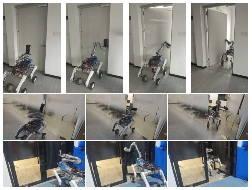
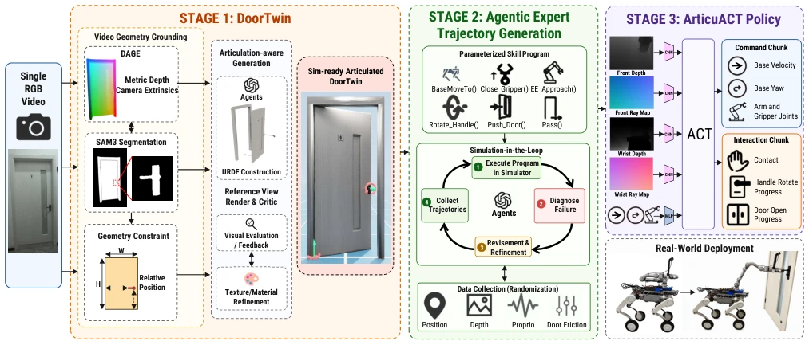
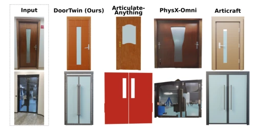
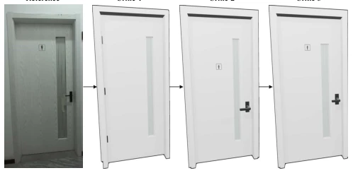
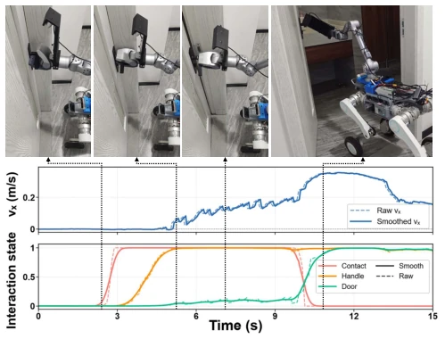

This paper provides a significant advantage for legged-wheeled robots in single-video door opening, simplifying complex long-horizon tasks into a pipeline of watch video -> create digital twin -> simulate training -> real robot execution, which is indeed quite impressive. The DoorTwin module can restore monocular video into doors with physical properties, much stronger than methods that only know how to generate rigid objects, after all, doors are articulated. The ArticuACT policy plus Plücker rays and interaction state supervision allows the robot to achieve a 96% success rate on real hardware, this data is quite competitive in contact-rich tasks like door opening. However, this method relies heavily on the pushing door action, generalization capability for complex interactions like pulling doors, rotating handles is not mentioned in the text, and it completely relies on single-video reconstruction; if the video is blurry or severely occluded, the digital twin might directly collapse. Additionally, although the 13-second door opening time is fast, whether it is robust enough in crowded environments still needs observation. Overall, this is a beautiful Real-to-Sim-to-Real practice, but do not expect it to handle all door handles.
Autonomous door opening and crossing is a key long-horizon task for mobile manipulation robots entering human environments, involving precise handle interaction and base-manipulator coordinated control. Existing methods mostly have obvious shortcomings: DoorGym [5], UniDoorManip [6], and ArticuBot [7] perform well in simulation but focus mainly on opening rather than crossing, and rely on pre-built assets; DoorBot [3] and adaptive mobile manipulation [8] rely on online adaptation or tactile feedback, increasing hardware complexity; while systems based on reinforcement learning or teacher-student training [1][2][4] usually require large amounts of real data or manually designed reward functions. More critically, existing Real-to-Sim-to-Real methods such as HUMAN2SIM2ROBOT [9], X-SIM [10], and SIMPACT [13] mostly target fixed-base or rigid objects, and often require additional scene scanning or human demonstrations, making it difficult to directly build simulation environments for specific doors from a single video. This paper aims to solve this pain point by reconstructing instance-specific doors from a single video, achieving a complete door opening and crossing task without human intervention.

Fig. 1. From a single RGB video, Video2DoorTraversal enables real-world wheel-legged door opening and traversal.
The overall framework is divided into three stages: DoorTwin reconstruction, Agent expert trajectory generation, and ArticuACT policy learning. First, DoorTwin starts from a single RGB video, uses DAGE [17] to recover metric geometry and camera poses, combines SAM 3 [19] to segment door components, and constructs global coordinate constraints. Subsequently, based on Articraft [16], parametric programs are generated, and through reference view rendering and visual Critic iterative correction, geometric and appearance consistency is ensured, finally generating a simulatable door digital twin. Second, the Simulation-in-the-loop Agent converts the door's kinematic parameters into parametric skill programs (such as rotating handles, pushing doors, crossing), executes and diagnoses failures in Isaac Gym, generates physically executable expert trajectories through iterative parameter optimization, and performs domain randomization to enhance robustness. Finally, the ArticuACT policy is based on the ACT [21] architecture, inputs dual-view depth images (front-facing and wrist-mounted) and robot state, predicts base velocity, manipulator joints, and gripper actions. Its innovation lies in introducing robot-centric Plücker ray mapping (Plücker conditioning), explicitly aligning pixels and action spaces to reduce view ambiguity; meanwhile, adding auxiliary supervision of future interaction states (contact, handle rotation, door opening degree) improves the accuracy of contact perception.

Fig. 2. Overview of Video2DoorTraversal. Given a single RGB video, DoorTwin reconstructs a metrically grounded, articulated, and simulation-ready door asset through geometric grounding, articulation-aware generation, reference-view critique, and appearance refinement. A simulation-in-the-loop agent then instantiates and refines a parameterized skill program to collect randomized expert trajectories. Finally, ArticuACT combines dual-view depth observations with robot-centric Pl¨ucker ray maps to predict coordinated base, arm, and gripper commands for real-world door opening and traversal.
Experiments were conducted on the Unitree A2-W legged-wheeled robot, using 5 real doors and 3 unseen doors for verification. Comparison baselines include Replay, OA Replay [9], DoorGym [5], UniDoorManip [6], Vanilla ACT [21], and Diffusion Policy [27], etc. In simulation, the proposed method achieved a door opening success rate of 98.44% and a crossing success rate of 97.27%, significantly outperforming baselines (e.g., UniDoorManip crossing was only 50.78%). In real-robot testing, the average success rate reached 96.57%, and a zero-shot transfer success rate of 80.95% was achieved on unseen doors with similar structures. Ablation studies show that Plücker conditioning and interaction state supervision can both significantly improve performance, with combined use yielding the best results; meanwhile, Agent trajectory generation based on simulation loops is more reliable than rule-based methods or methods without simulation feedback. Execution time averages about 13 seconds, with high efficiency.

Fig. 3. Qualitative comparison of articulated door assets.

Fig. 4. Reference-view rendering and critic refinement iterations.

Fig. 6. Snapshots of real-world experiments with interaction state.